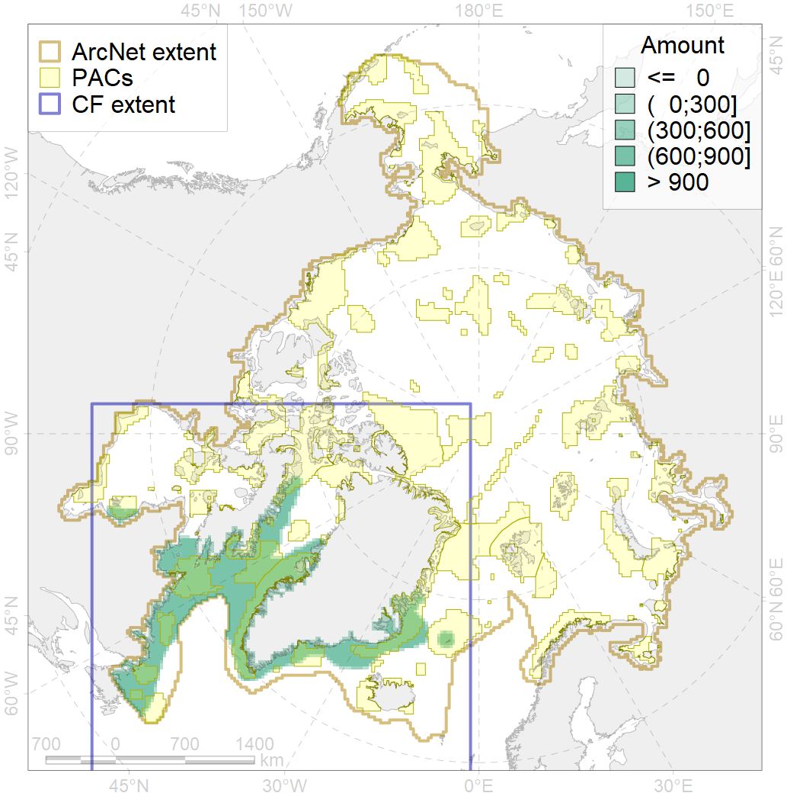
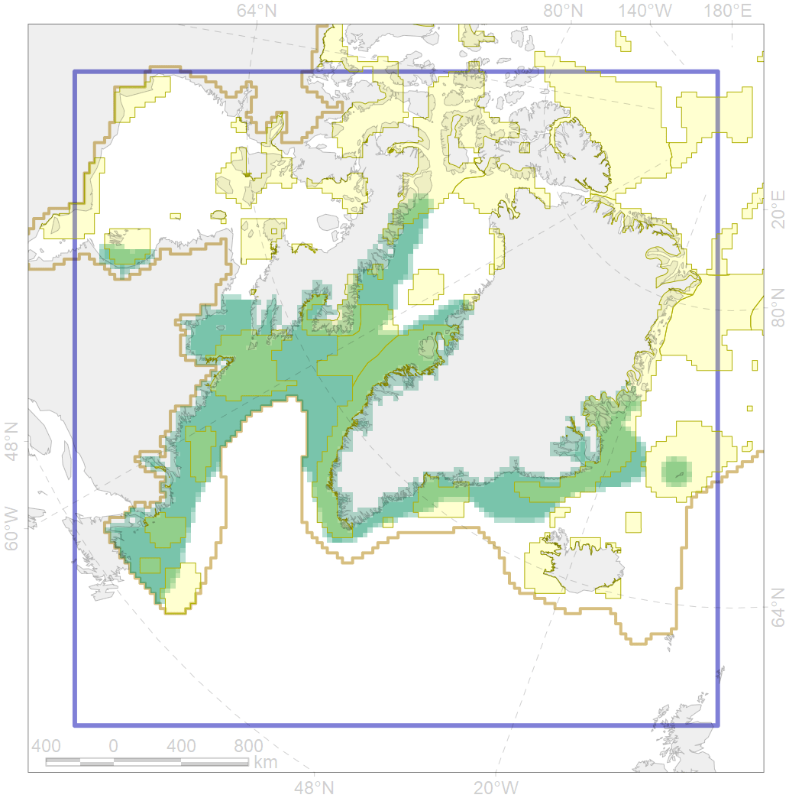

4056

| CF code | 4056 |
| CF name | Distribution of the American Plaice (Hippoglossoides platessoides), European populations |
| Time Period | 1950-2010s |
| Source(s) | Coad, Reist, 2018; Mecklenburg et al., 2018 |
| Seasonality | Jan-Dec |
| Depth Horizon | 0-450 (rare to 1150) |
| Methodology | Compiled from literature sources based on field observations |
| Use Restrictions | Open access |
| Author Name | N. Chernova |
| Notes | |
| Scenario’s Target | 0.03 |
| Target Achievement | 0.471 (Scenario: 1570.7%) |
| PAC | Share of the Total Amount within the PAC | Share of the Target Achievement for the ArcNet | PAC’s Contribution to the Target Achievement |
|---|---|---|---|
| 32 | 7.7%7.8% | 228.0%231.4% | 14.5%14.7% |
| 34 | 1.2%1.2% | 38.2%38.2% | 2.4%2.4% |
| 42 | 2.1%2.1% | 58.5%58.5% | 3.7%3.7% |
| 43 | 0.1% | 1.9% | 0.1% |
| 44 | 10.9%12.4% | 340.8%378.3% | 21.7%24.1% |
| 45 | 6.1%6.8% | 190.9%213.4% | 12.2%13.6% |
| 46 | 2.0%2.4% | 59.5%73.3% | 3.8%4.7% |
| 48 | 0.1%0.1% | 1.5%1.5% | 0.1%0.1% |
| 50 | 0.2% | 6.3% | 0.4% |
| 52 | 1.0%1.0% | 33.3%33.3% | 2.1%2.1% |
| 71 | 1.1% | 31.8% | 2.0% |
| 76 | 8.1%8.3% | 251.9%255.2% | 16.0%16.2% |
| 77 | 2.5% | 75.1% | 4.8% |
| 78 | 0.0%0.0% | 0.3%1.0% | 0.0%0.1% |
| 79 | 2.3%2.5% | 63.2%63.5% | 4.0%4.0% |
| 80 | 0.7%0.9% | 18.9%20.7% | 1.2%1.3% |
| 81 | 0.5%0.6% | 9.5%10.9% | 0.6%0.7% |
| inner | 46.4%49.9% | 1409.7%1494.4% | 89.8%95.1% |
| outer | 53.6%57.6% | 161.0%270.7% | 10.2%17.2% |
| † supplement values are for area consistence whereas principal values are for Accenter compatible gridded stats |